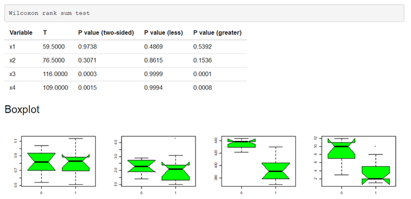
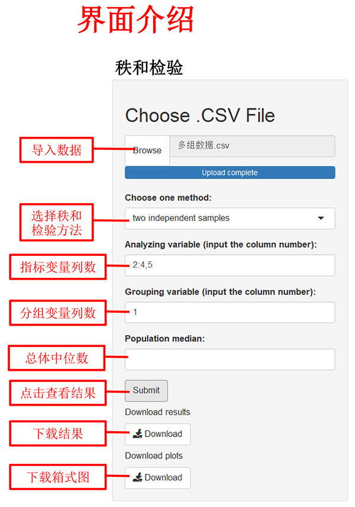
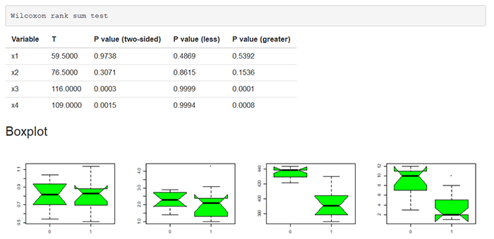

2、配对设计的Wilcoxon符号秩和检验
3、完全随机设计的两独立样本比较的Wilcoxon秩和检验
4、完全随机设计多样本比较的Kruskal-Wallis秩和检验
二、数据格式

注：
1、数据格式为“.csv”
2、数据变量名必须为英文、阿拉伯数字或下划线的组合
3、指标变量（Explanatory variable）可以输入多列，以英文状态下的逗号或冒号分隔，如：2,3,4或2:4
示例如下：

| 秩和检验 | 一、秩和检验方法 | |
| 1、单样本资料的Wilcoxon符号秩和检验 2、配对设计的Wilcoxon符号秩和检验 3、完全随机设计的两独立样本比较的Wilcoxon秩和检验 4、完全随机设计多样本比较的Kruskal-Wallis秩和检验 二、数据格式 |
||
|  | ||
| |
||
| 注： |
||
| 三、输出结果展示 | ||
| 输出结果包括秩和检验的统计量、P值（单、双侧）。 示例如下：  |